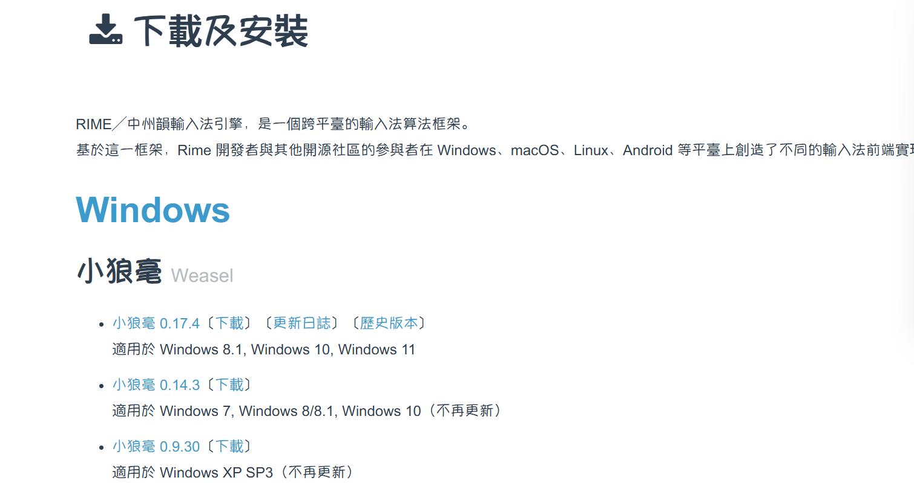
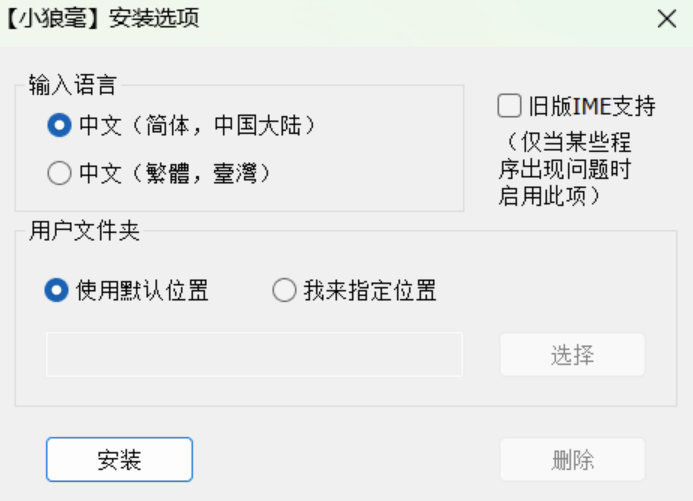
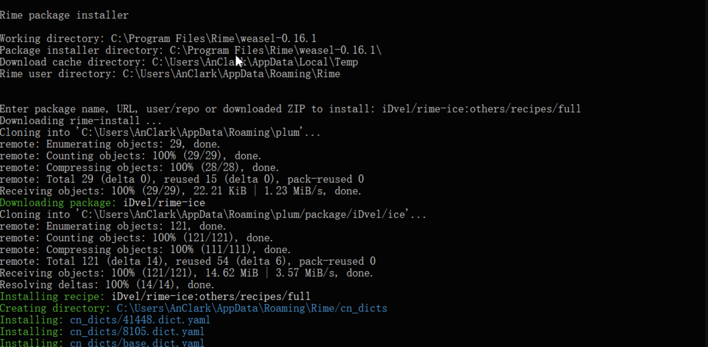

Weasel¶
1、简介¶
RIME 本身简洁、流畅，性能优异，注重隐私，可定制性强，对于追求极致输入体验的用户，可谓不二之选。而为 RIME 量身打造的雾凇拼音，是目前维护最积极、功能最强大的 RIME 输入方案，拥有精心打磨的大容量词库、开箱即用的中文输入体验。
RIME 本身是一个输入法引擎，它在不同平台有不同的适配，分别是：
| 平台 | 对应的适配 |
|---|---|
| Linux | 中州韵（通过 IBus 或 Fcitx 输入法框架运行） |
| Windows | 小狼毫 |
| macOS | 鼠须管、小企鹅输入法（Fcitx） |
| Android | 同文输入法（TRIME） |
| iOS | 仓输入法（开源免费）、iRime（付费） |
2、安装小狼毫¶
-
前往 RIME 官方网站，下载小狼毫的安装包：

Note
不同系统版本适用不同的小狼毫，如果是 Windows 8.1 及更高版本，则选择最新的 0.17.4；如果是老版本的 Windows（如Windows 7），则选择旧版本，但是已经不再更新。
-
下载后，运行安装程序，按提示安装即可。期间，安装程序会要求你指定用户文件夹，该文件夹用于放置 RIME 的用户配置文件，通常使用默认设置即可，当然你也可以指定其他的位置：

-
安装完成后，小狼毫默认启用。在 Windows 10/11，你可以按「Windows+空格」快捷键切换输入法。
3、安装雾凇拼音¶
Windows 平台安装雾凇拼音非常方便，可以直接使用小狼毫输入法自带的配置工具。
更新步骤与安装步骤完全相同：
-
右键点击任务栏上的 RIME 图标，选择「输入法设定」，打开配置工具：

-
在配置工具中，点击左下角的「获取更多输入方案」按钮（我这里是已经安装过了雾凇拼音）：

-
随后会出现一个命令行窗口，这就是小狼毫自带的配置文件安装工具。在提示符 「Enter package name...」后，输入雾凇拼音的包名（其中
full表示安装所有的组件）：iDvel/rime-ice:others/recipes/full
-
回车确认，随即 RIME 会自动下载、安装雾凇拼音输入方案：

Caution
配置文件安装工具需要用到 Git。如果你的系统没有安装 Git，或下载时发生错误，请参照 RIME 官方的教程，用教程中提供的 Bootstrap 工具包来初始化该工具。
-
稍等片刻，命令提示符出现「Updated xxx files...」的提示（黄色字样），表示安装完成。此时可以直接关掉该窗口：

-
回到小狼毫配置工具，将列表往下拉，你就会看到雾凇拼音的选项。勾选它，然后单击「中」按钮3，确认：

接下来配置工具还会要求你选择一款皮肤。直接点击「中」按钮确认，即可完成全部设置。
4、自定义皮肤¶
具体配置信息可以看官方文档，这里给出我用的配置：
-
右键点击任务栏上的 RIME 图标，选择「用户文件夹」：
-
在用户文件夹下找到 weasel.custome.yaml 文件，直接编辑：
customization: distribution_code_name: Weasel distribution_version: 0.17.4 generator: "Weasel::UIStyleSettings" modified_time: "Thu Sep 25 22:03:01 2025" rime_version: 1.13.1 patch: "preset_color_schemes/+": mac_blue_dark: {author: arvin, back_color: 0x181818, border_color: 0x0808080D, border_width: 0, candidate_back_color: 0x181818, candidate_format: "%c %@ ", candidate_text_color: 0xFFFFFF, color_format: abgr, comment_text_color: 0xFFFFFFFF, hilited_back_color: 0xFFc85c2f, hilited_candidate_back_color: 0xFFc85c2f, hilited_candidate_text_color: 0xFFFFFFFF, hilited_comment_text_color: 0xFFFFFF, hilited_label_color: 0xFFFFFF, hilited_text_color: 0xFFFFFF, label_color: 0xFFFFFF, name: "苹果黑", shadow_color: 0x080808DE, text_color: 0xFF333333} mac_blue_write: {author: arvin, back_color: 0xFFFFFFFF, border_color: 0xd2d2d2FF, candidate_back_color: 0xFFFFFFFF, candidate_format: "%c %@ ", candidate_text_color: 0x333333FF, color_format: rgba, comment_text_color: 0x5C5C5CFF, corner_radius: 6, hilited_back_color: 0x315efb1a, hilited_candidate_back_color: 0x315efb1a, hilited_candidate_text_color: 0x0158ccFF, hilited_comment_text_color: 0x0158ccFF, hilited_corner_radius: 6, hilited_label_color: 0x315efbFF, hilited_text_color: 0x0158ccFF, label_color: 0x333333FF, name: "苹果蓝白", shadow_color: 0x20212447, text_color: 0x333333FF} style: color_scheme: mac_blue_write comment_font_face: "PingFang SC" comment_font_point: 11 display_tray_icon: false font_face: "Segoe UI Emoji, PingFang SC, Microsoft YaHei, SF Pro, Noto Color Emoji" font_point: 11 horizontal: true inline_preedit: true label_font_face: "PingFang SC" label_font_point: 10 label_format: "%s." layout: {align_type: bottom, border_width: 1, candidate_spacing: 16, corner_radius: 6, hilite_padding: 4, hilite_spacing: 3, margin_x: 7, margin_y: 7, max_height: 60, round_corner: 4, shadow_offset_x: 2, shadow_offset_y: 2, shadow_radius: 6, spacing: 5} mark_text: "" preedit_type: composition "style/color_scheme": mac_blue_write -
右键点击任务栏上的 RIME 图标，选择「重新部署」。
5、配置¶
5.1、输入习惯¶
打开用户文件夹，在 default.custom.yaml 配置文档中配置输入习惯。
配置候选项数量
patch:
menu/page_size: 9
配置快捷键
patch:
key_binder/bindings/+:
- { when: paging, accept: comma, send: Page_Up } # 句号向下翻页
- { when: has_menu, accept: period, send: Page_Down } # 逗号向上翻页
5.2、自定义短语¶
自定义短语作为极度私有化，且能极大提升输入效率的工具，在 RIME 中具有十分重要的意义。
-
用户自定义短语存储于用户文件夹下的 custom_phrase.txt 文本文件中：
# Rime table # coding: utf-8 # # 请将该文件以 UTF-8 无签名编码保存 # 存储位置为 ~Rime 用户文件夹/custom_phrase.txt # # 码表各字段以制表符（Tab）分隔 # 编码格式：词条+tab+编码+tab+权重 权重决定短语词条在候选项中的排序，权重非必须项 xxx@gmail.com gmail 1 xnom id 1 -
然后，需要在输入方案配置文件 rime_ice.schema.yaml 中，指定调用这张自定义短语表。和词库一样，如果你使用多个输入方案，需要在每个输入方案中调用：
custom_phrase: user_dict: custom_phraseNote
输入方案配置文件名称格式为
<方案名称>.schema.yaml，我这里用的雾凇拼音，所以是 rime_ice.schema.yaml。 -
重新部署后，自定义短语就能生效。
6、用户资料同步¶
RIME 没有云同步功能，但有本地同步功能。能够将用户数据同步至本地文件夹。
我们可以借助坚果云、OneDrive 等第三方云将这个本地文件夹同步至云端，以此实现个人词典和配置方案在不同电脑间的同步和备份。
以 OneDrive 举例：
-
在你同步文件夹内，这里举例为
E:\Users\Orichalcos\OneDrive\，新建一个应用文件夹。 -
打开用户资料夹下的 installation.yaml 文件，在合适的地方添加如下代码：
sync_dir: 'E:\Users\Orichalcos\OneDrive\应用'最后完成后的样子是这样：
distribution_code_name: Weasel distribution_name: "小狼毫" distribution_version: 0.17.4 install_time: "Mon Sep 22 10:01:51 2025" installation_id: "Weasel" # 此处填写喜欢的名字 rime_version: 1.13.1 sync_dir: 'E:\Users\Orichalcos\OneDrive\应用' -
右键托盘图标，运行「用户资料同步」。完成后，你就能在「应用」文件夹中找到 「Weasel 」文件夹，其中的内容就是你的用户资料，包含了自学习个人词典文件和配置文件等等。
-
利用 OneDrive 将此文件夹同步至云端；在另外一台电脑，按照相同的方式操作。将云端文件夹同步至本地。
RIME 的同步逻辑
RIME 同步两个方面的资料，一为个人词典，二为个人配置：
-
个人词典同步逻辑为双向同步：
举例来说：甲电脑个人词典累积了词汇 ABC，乙电脑累积了词汇 DEF，那么，通过第三方云同步和 Rime 同步后，甲乙两地个人词典词汇都会同步且合并为 ABCDEF。通过第三方云同步，可以非常方便地同步两地之间的个人词典，保持相同的输入体验。
-
个人配置同步逻辑为单向同步：
RIME 只会将配置文件，单向地从「用户文件夹 ~\Rime」同步至「同步文件夹\Weasel」。换句话说，个人配置只会在「同步文件夹\Weasel」里在甲乙两地被反复同步和覆盖，而不会导入配置文件。如果你需要导入异地的配置文件，可以在第三方云完成同步后，手动将配置文件导入。
这样的同步逻辑是为了保持配置的一致性。因为，配置文件之于 RIME 十分重要，关系着 RIME 是否能够正常运行。也必须在修改后通过重新部署才能生效。若两地的配置不一致时或其中一地有错误时，必然产生无法预估的混乱后果。不过，个人配置定制好之后，也很少需要修改，权且当作备份。云同步个人配置更多用于异地新电脑部署时。